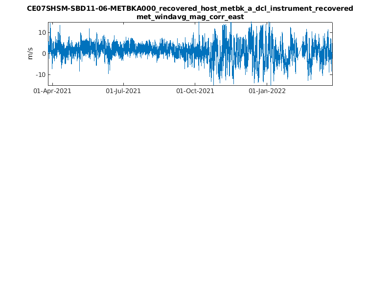

addpath('~/ooi-data-explorations/matlab')
addpath('~/ooi-data-explorations/matlab/utilities')
site = 'CE07SHSM';
node = 'SBD11';
sensor = '06-METBKA000';
method = 'recovered_host';
stream = 'metbk_a_dcl_instrument_recovered';
data = load_kdata(site, node, sensor, method, stream, "*metbk_a_dcl_instrument_recovered_2021*.nc");
Loading 2 files from the local kdata directory ...
Elapsed time is 9.041018 seconds.
for k=1:length(data.Properties.VariableNames)
variable = data.Properties.VariableNames{k};
fprintf([variable '\n'])
end
air_temperature
air_temperature_qartod_executed
air_temperature_qartod_results
air_temperature_qc_executed
air_temperature_qc_results
barometric_pressure
barometric_pressure_qartod_executed
barometric_pressure_qartod_results
barometric_pressure_qc_executed
barometric_pressure_qc_results
ct_depth
deployment
eastward_velocity
eastward_wind_velocity
eastward_wind_velocity_qartod_executed
eastward_wind_velocity_qartod_results
eastward_wind_velocity_qc_executed
eastward_wind_velocity_qc_results
internal_timestamp
longwave_irradiance
longwave_irradiance_qartod_executed
longwave_irradiance_qartod_results
longwave_irradiance_qc_executed
longwave_irradiance_qc_results
met_barpres
met_barpres_qc_executed
met_barpres_qc_results
met_current_direction
met_current_direction_qc_executed
met_current_direction_qc_results
met_current_speed
met_current_speed_qc_executed
met_current_speed_qc_results
met_heatflx_minute
met_latnflx_minute
met_netlirr_minute
met_netsirr
met_netsirr_qc_executed
met_netsirr_qc_results
met_relwind_direction
met_relwind_direction_qc_executed
met_relwind_direction_qc_results
met_relwind_speed
met_relwind_speed_qc_executed
met_relwind_speed_qc_results
met_salsurf
met_salsurf_qartod_executed
met_salsurf_qartod_results
met_salsurf_qc_executed
met_salsurf_qc_results
met_sensflx_minute
met_spechum
met_spechum_qc_executed
met_spechum_qc_results
met_windavg_mag_corr_east
met_windavg_mag_corr_north
northward_velocity
northward_wind_velocity
northward_wind_velocity_qartod_executed
northward_wind_velocity_qartod_results
northward_wind_velocity_qc_executed
northward_wind_velocity_qc_results
precipitation
precipitation_qartod_executed
precipitation_qartod_results
precipitation_qc_executed
precipitation_qc_results
relative_humidity
relative_humidity_qartod_executed
relative_humidity_qartod_results
relative_humidity_qc_executed
relative_humidity_qc_results
sea_surface_conductivity
sea_surface_conductivity_qartod_executed
sea_surface_conductivity_qartod_results
sea_surface_conductivity_qc_executed
sea_surface_conductivity_qc_results
sea_surface_temperature
sea_surface_temperature_qartod_executed
sea_surface_temperature_qartod_results
sea_surface_temperature_qc_executed
sea_surface_temperature_qc_results
shortwave_irradiance
shortwave_irradiance_qartod_executed
shortwave_irradiance_qartod_results
shortwave_irradiance_qc_executed
shortwave_irradiance_qc_results
%%
%Example plot
fig = figure(1);
%Plot W/E Winds
subplot(311)
plot(data.Time,data.met_windavg_mag_corr_east)
xlim([data.Properties.StartTime max(data.Time)])
datetick('x',1,'keeplimits')
title({[site '-' node '-' sensor '_' method '_' stream ], ['met_windavg_mag_corr_east']}, 'Interpreter', 'none')
ylabel('m/s')
ylim([-15 15])
fig.Position(3:4)=[750,600];
